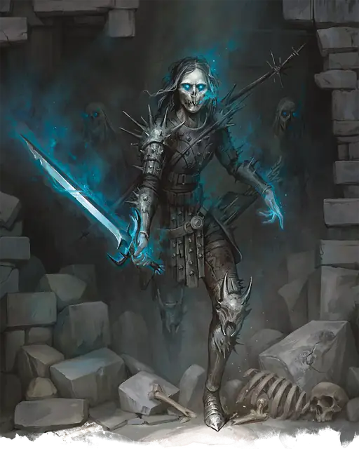

Умертвие
Wight
Средняя Нежить, Нейтральная Злая

Класс Защиты 14 Инициатива +4 (14)
Хиты 82 (11к8 + 33)
Скорость 30 футов
| мод | спас | ||
|---|---|---|---|
| СИЛ | 15 | +2 | +2 |
| ЛОВ | 14 | +2 | +2 |
| ТЕЛ | 16 | +3 | +3 |
| мод | спас | ||
|---|---|---|---|
| ИНТ | 10 | +0 | +0 |
| МДР | 13 | +1 | +1 |
| ХАР | 15 | +2 | +2 |
Сопротивление урону Некротический
Иммунитеты Яд; Истощение, Отравленный
Чувства Тёмное зрение 60 футов, пассивное Восприятие 13
Языки Общий
Опасность 3 (700 опыта; БВ +2)
Особенности
Чувствительность к солнечному свету. Находясь на солнечном свету, умертвие совершает с Помехой проверки характеристик и броски атаки.
Действия
Мультиатака. Умертвие совершает две атаки Некротическим мечом или Некротическим луком в любой комбинации. Оно может заменить одну из атак на Вытягивание жизни.
Некротический меч. Бросок рукопашной атаки: +4, досягаемость 5 фт. Попадание: 6 (1к8 + 2) Рубящего урона плюс 4 (1к8) Некротического урона.
Некротический лук. Бросок дальнобойной атаки: +4, дистанция 150/600 фт. Попадание: 6 (1к8 + 2) Колющего урона плюс 4 (1к8) Некротического урона.
Вытягивание жизни. Спасбросок Телосложения: Сл 13, одно существо в 5 футах. Провал: 6 (1к8 + 2) Некротического урона, и максимум Хитов цели снижается на число, равное полученному урону. Гуманоид, убитый этой атакой, через 24 часа восстаёт как управляемый умертвием Зомби, если за это время его не вернут к жизни или не уничтожат тело. Под управлением умертвия может быть не больше двенадцати зомби единовременно.
Бонус мастерства +2
Умертвие
Поглощающий жизнь труп-воин
Умертвия — иссохшие трупы неумолимых воинов, чья злоба не даёт им упокоиться и после смерти. В отличие от обычных зомби, они сохраняют воспоминания и злые замыслы, которые вынашивали при жизни.
Восстав из могилы, умертвие продолжает свои злодейства, но теперь им движет ещё и голод до жизненной силы. Своими атаками оно вытягивает из жертв эссенцию жизни. Гуманоиды, убитые его иссушающей хваткой, через день поднимаются и служат умертвию послушными зомби.
Умертвия могут возвращаться из мёртвых по множеству зловещих причин. Совершите бросок по таблице «Мотивация умертвий» или определите сами причину, по которой умертвие терзает живых.
Мотивация умертвий
| к8 | Умертвие вернулось из мёртвых, чтобы… |
| 1 | Бросить вызов любому, кто пройдёт мимо его могилы в проклятую ночь. |
| 2 | Захватить земли, которыми когда-то хотело править. |
| 3 | Продолжить преступления, за которые было казнено. |
| 4 | Следовать за гнусным хозяином, которому служило при жизни. |
| 5 | Исполнить клятву, оставшуюся невыполненной при жизни. |
| 6 | Подчиняться культу или божеству, даровавшему ему нежизнь. |
| 7 | Доказать, что оно было величайшим воином всех времён. |
| 8 | Отыскать своё похищенное сердце или иную ценность. |